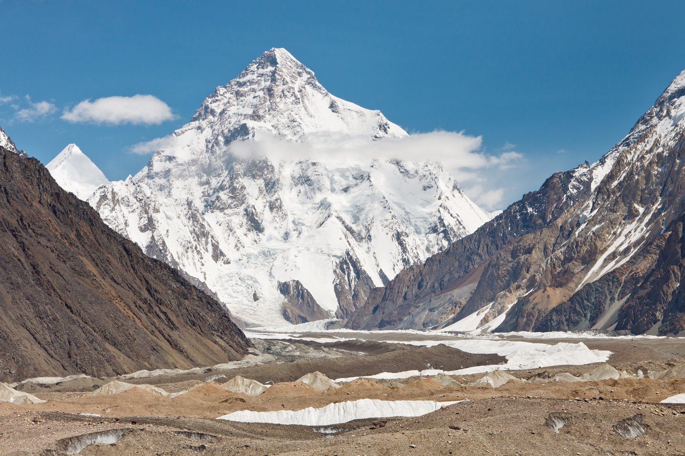
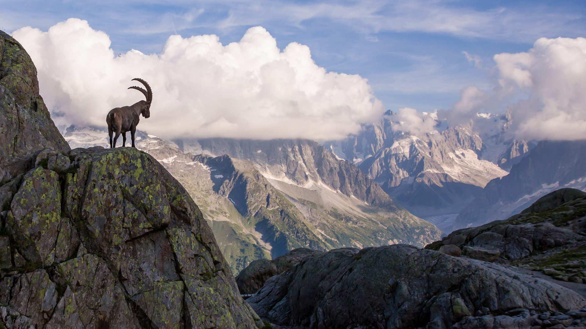
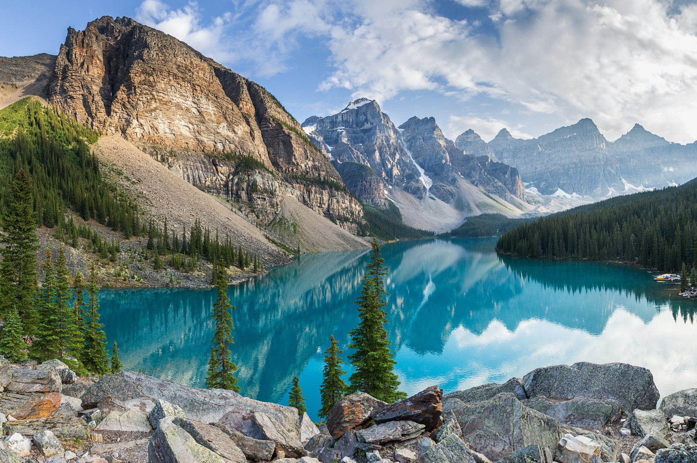

The mere sight of them can take your breath away.
What’s more special is the way a mountain can make you feel when you climb it and make it to the top. You feel mighty and powerful. But how much do we really know about these gigantic land forms other than they are made from rock? Not much? Well, in this article, we’ll discuss 8 amazing facts about mountains to improve your knowledge of these mighty structures.
1. Mount Everest is the World’s Highest Mountain
Mount Everest has the “highest elevation above the sea level,” which is why it is called the highest point on Earth. The mountain’s epic height was first identified in 1856 by a team escorted by a British surveyor – Sir George Everest. The official height of Everest is calculated to be 8,848 meters (29,028 feet). Did you know that six people on average die annually while climbing Mount Everest? That’s just a bonus fact for you.

2. There Are Three Types of Mountains
- Mountains of accumulation or Volcanic Mountains, formed by the eruption of volcanoes
- Folded mountains, developed by the layers of Earth’s crust
- Mountain Erosion, formed by the erosion of rocks
These types are:
3. K-2 Is Also Known as the Savage Mountain
K-2 is the world’s second-highest mountain in the world, situated on the China-Pakistan border. It was named “the Savage Mountain” after George Bell (an American explorer) climbed the mountain in 1953 and said, “It’s a savage mountain that tries to kill you.” Of all the highest mountains in the world, K-2 is indeed the deadliest.
4. New Zealand Features the World’s Longest Mountain Name
The name holds the Guinness World Record and consists of 85 characters. The name of this mountain is Taumatawhakatangihangakoauauotamateapokaiwhenuakitanatahu. When translated into English, the word means “the place where Tmatea, the man with the big knees, who slid, climbed, and swallowed mountains, known as – landeater – played his nose flute to his loved one”.
5. Mountain Goats are Adept to Climbing Mountains
Also known as the Rocky Mountain goat, this mammal is indigenous to North America. Mountain goats have cloven hooves and toes that enable them to cover wide steps. Plus, the bottom of each toe has a hard pad that gives them a solid grip. It is believed that mountain goats can climb mountains better than even the most skilled human mountaineers.
6. Mountains Exist Under the Sea as Well
There are enormous mountains underwater. The most famous undersea mountain is the Mid-Atlantic Ridge while the highest ocean mountain is Mount Vema in the South Atlantic Ocean. Undersea mountains were formed as a result of volcanic activity under the sea. After these volcanic eruptions were over, the mountains (which were first above land) were submerged in the oceans. Most of these mountains carry a lot of nutrients and prove to be a rich source of food for various sea creatures.
7. Mountains Also Grow Plants
While mountains may seem barren, they actually boast a wide variety of plants and trees. These include shrubs, grasses, mosses, lichens, and alpine flowers. Some mountains also feature evergreen trees such as pines, cedars, and spruce trees. However, nothing grows on mountains above the snow line. This part of the mountain is effectively a desert.
8. 12% of the World’s People Live in the Mountains
In addition to plants and animals, people are also well-adapted to living in the mountains. Mountains offer fresh air and scenic beauty to their inhabitants. An amazing thing about these people is that people living in the mountains tend to enjoy a longer lifespan. These were just some amazing facts about mountains. These natural formations are larger than life, and some of the Earth’s most amazing constructions!